Xadrez com alma de RPG
Seis personagens em 3D. O peão de escudo e lança, o bispo mago, a torre com arqueiro, a dama do relâmpago. Cada captura é um duelo com golpe e queda próprios.
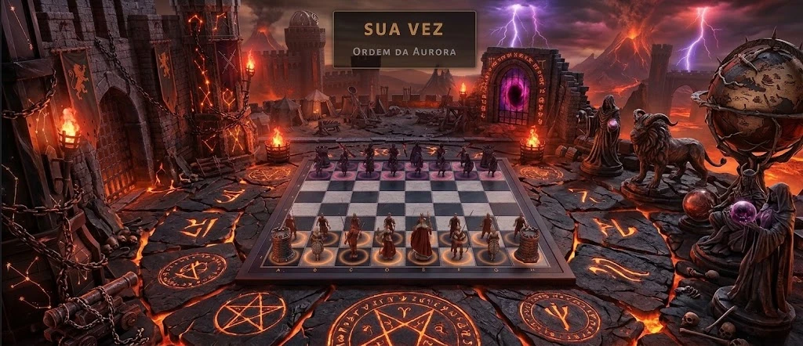
Transmissão ao vivo · Partida da Ópera, 1858
Xadrez de verdade, com guerreiros de verdade. Cada captura vira duelo, e um peão pode virar lenda.
Ao fundo, uma simulação 3D ao vivo da Partida da Ópera (Paul Morphy, 1858): as peças são guerreiros que duelam a cada captura, um peão se transmuta em Lanceiro e o rei negro cai em xeque-mate no 17º lance.
O jogo
As regras são as do xadrez de sempre. O que muda é o que acontece em cada casa.
Seis personagens em 3D. O peão de escudo e lança, o bispo mago, a torre com arqueiro, a dama do relâmpago. Cada captura é um duelo com golpe e queda próprios.
41 cartas em três grimórios: Tempestade, Cinzas e Arcano. Feitiços, relíquias, armadilhas e invocações pagos com essência.
Notas Glicko-2 separadas para o Xadrez Puro e o Arcano, filas com rivais de nível parecido e quatro ligas, mais o título de Grão-Mestre.
Da Fortaleza Medieval ao Monte Olimpo, cada arena com céu, luz, música e ambiente próprios. Troque de arena no meio da partida.
A campanha
A Queda estilhaçou o Livro da Vida em Selos e os espalhou pelos mundos. Você é o último Guardião acordado da Aurora: atravesse oito mundos, derrube os seus soberanos e recomponha o Livro.
Sua conquista ainda não começou. O progresso fica salvo neste navegador.
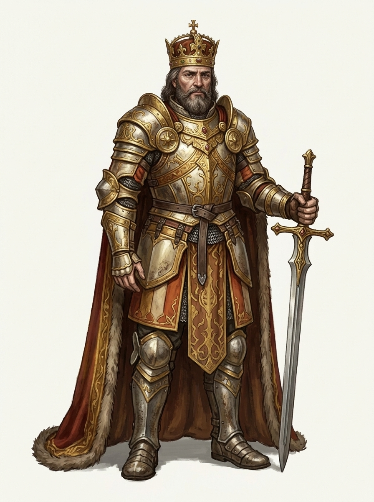
Mundo 1
O Arcanjo desce num pilar de luz para testar o último Guardião acordado.
Regra do mundo: Xadrez puro, sem cartas: o Arcanjo testa o Guardião.
Mundo atual
0/18 estrelas
Vença o chefão do mundo anterior para abrir este mundo.
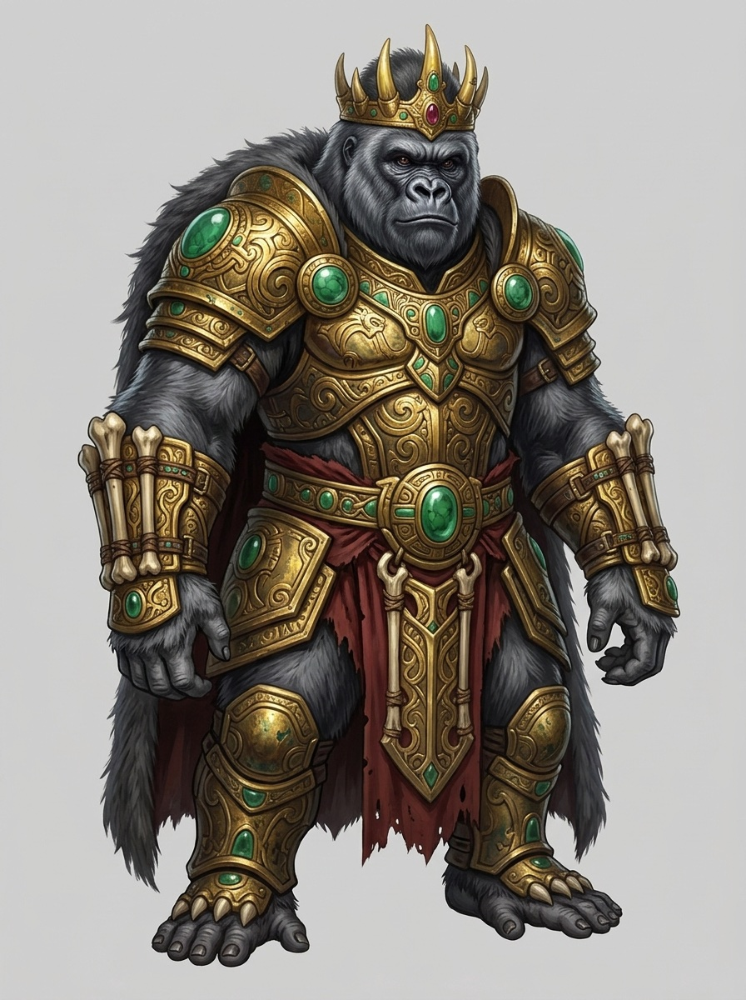
Mundo 2
O Selo caiu no alto do templo e despertou o ídolo gorila de pedra.
Regra do mundo: O rival esconde Armadilhas de Espinhos.
Bloqueado
0/18 estrelas
Vença o chefão do Mundo 1 para abrir este mundo.
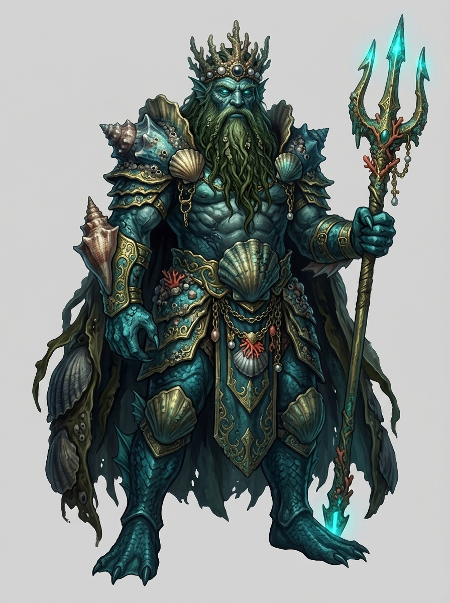
Mundo 3
A onda da Queda trouxe o Kraken, que guarda o Selo na Cidade Afundada.
Regra do mundo: O rival abre Portais de Runa: a correnteza.
Bloqueado
0/18 estrelas
Vença o chefão do Mundo 2 para abrir este mundo.
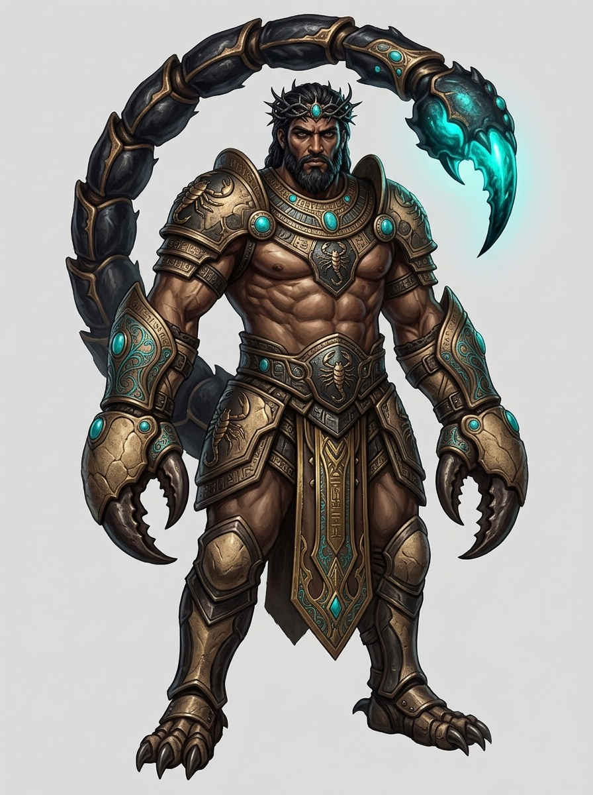
Mundo 4
O Verme-Colosso engoliu o Selo e o carrega sob as dunas.
Regra do mundo: O rival abre Fossos de Lava: a areia movediça.
Bloqueado
0/18 estrelas
Vença o chefão do Mundo 3 para abrir este mundo.
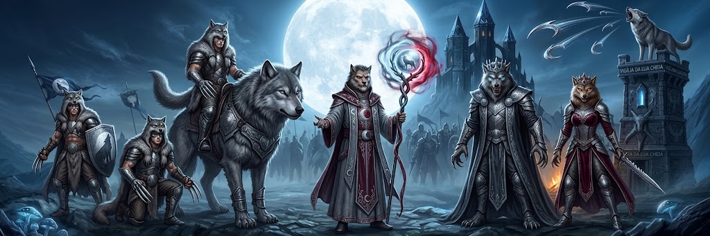
Mundo 5
O Selo caiu com o pedaço da lua; sob a lua partida, o Alpha vira lobisomem e não volta.
Regra do mundo: A Névoa Fria cai sobre o tabuleiro.
Bloqueado
0/18 estrelas
Vença o chefão do Mundo 4 para abrir este mundo.
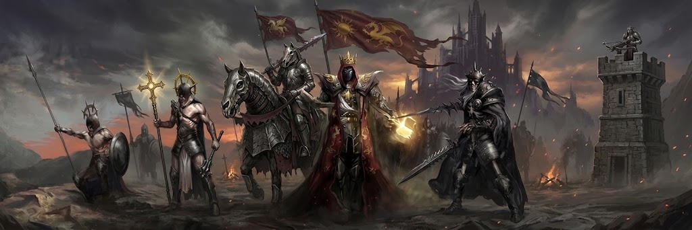
Mundo 6
A Legião usou o Selo para erguer o Dragão de Ossos, os restos do ancestral dos dragões.
Regra do mundo: O rival ergue Recrutas do Cemitério.
Bloqueado
0/18 estrelas
Vença o chefão do Mundo 5 para abrir este mundo.
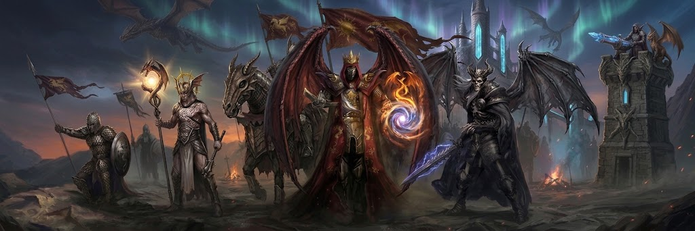
Mundo 7
O Dragão Gigante só entrega o fogo a quem o vencer.
Regra do mundo: Repercussão de Impacto em toda captura do rival.
Bloqueado
0/18 estrelas
Vença o chefão do Mundo 6 para abrir este mundo.
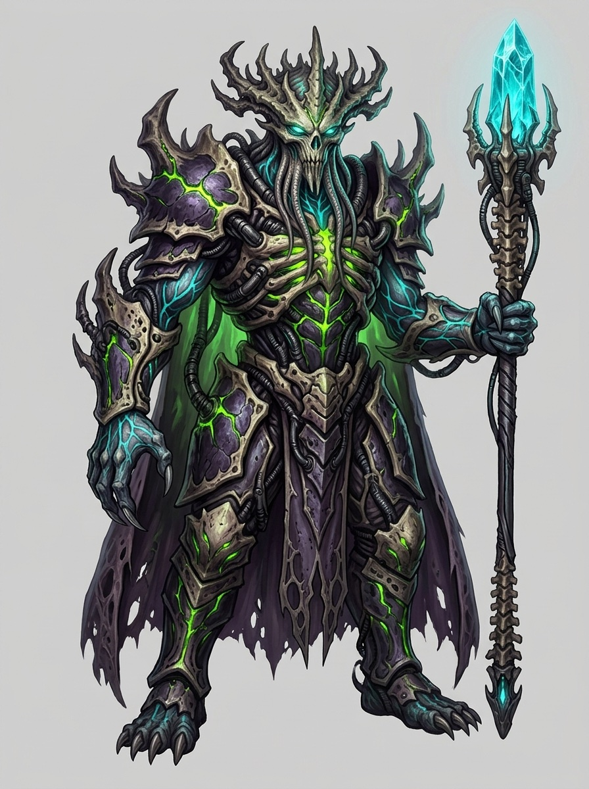
Mundo 8
A Rainha-Mãe guarda o último Selo no coração da câmara de ovos.
Regra do mundo: As regras dos seis mundos anteriores, misturadas.
Bloqueado
0/18 estrelas
Vença o chefão do Mundo 7 para abrir este mundo.
Batalha, problema de mate, a regra do mundo, sobrevivência, batalha difícil e o chefão. Vencer uma fase abre a seguinte; derrubar o chefão abre o próximo mundo.
Uma por vencer, outra por capturar o Portador e vencer, a terceira por vencer em até 30 lances. São 18 por mundo e 144 na conquista inteira.
Em toda fase uma peça inimiga, nunca o Rei, esconde a carta da fase: capture o Portador e vença por mate para ficar com ela. No chefão, o Selo do mundo está escondido numa peça maior.
Modo Arcano
Cada turno você pode gastar essência numa carta antes de mover. Um passo de relâmpago, uma fênix, um fosso de lava: o xadrez continua, mas o tabuleiro já não é o mesmo.
Carregando as cartas…
Campos de batalha

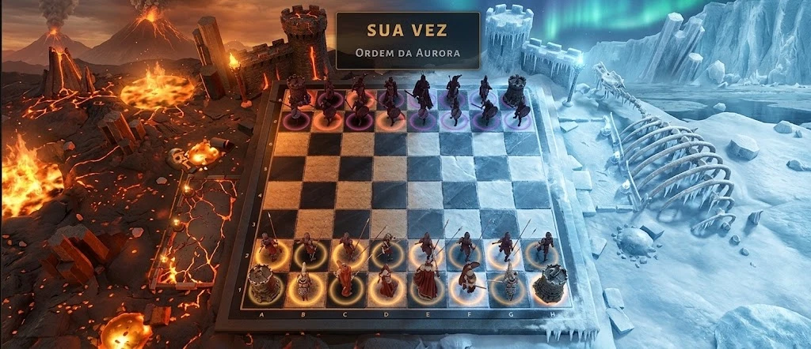
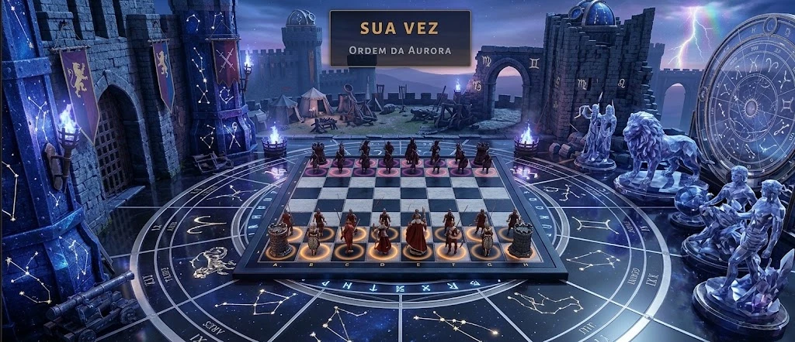

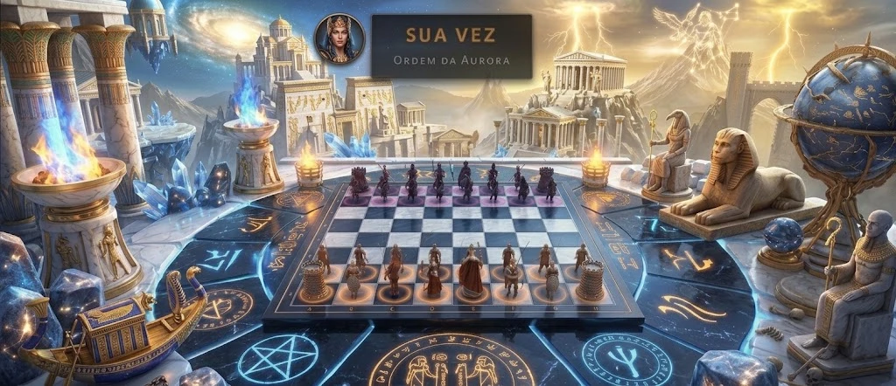
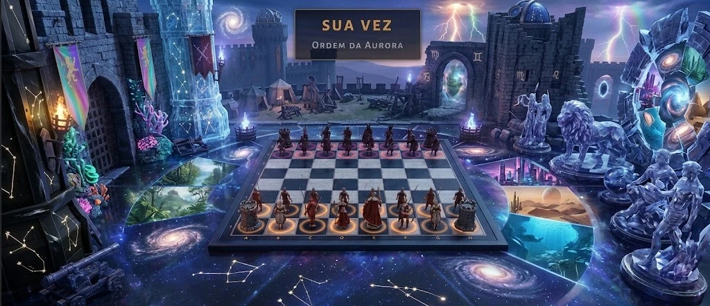
E ainda a Fortaleza Medieval, o Covil dos Dragões e a Pedra Filosofal.
Ranking
As melhores notas firmes do Xadrez Puro. Contas entram no ranking depois de algumas partidas ranqueadas, quando a nota Glicko-2 deixa de ser provisória.
Como jogar
Xadrez Puro contra a IA (Recruta, Veterano ou Mestre), o Modo Arcano com cartas, ou uma partida online por link ou pela fila.
As regras são as clássicas: roque, en passant, promoção e empates. Ao capturar, a câmera corta para o duelo.
No Arcano, cada turno rende essência para jogar cartas do seu grimório. Uma armadilha bem posta vale uma torre.
Vozes do tabuleiro
Falas dos personagens do jogo.
Abra o jogo no navegador, sem instalar nada. Jogue contra a IA agora ou entre na fila ranqueada e firme o seu nome no grimório.